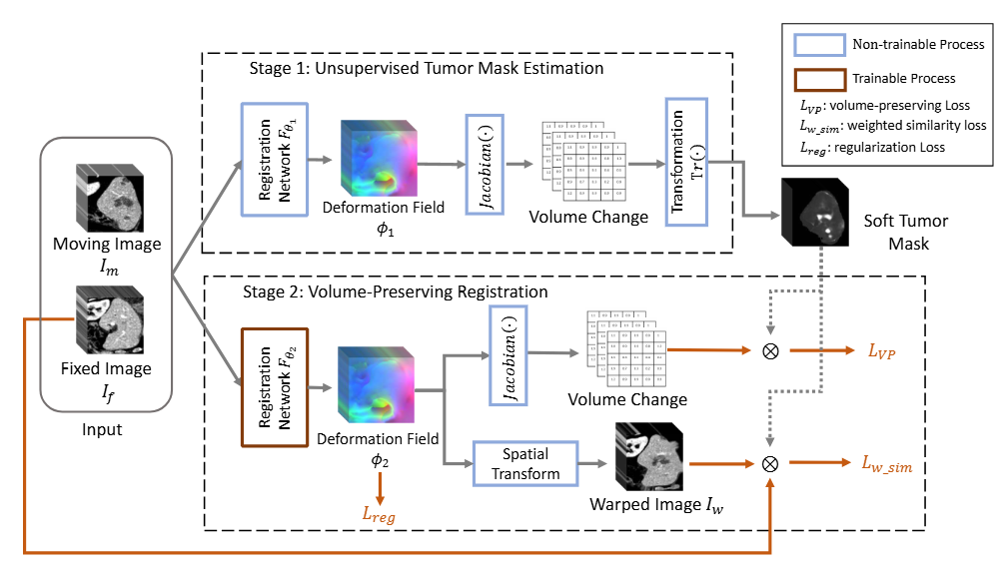
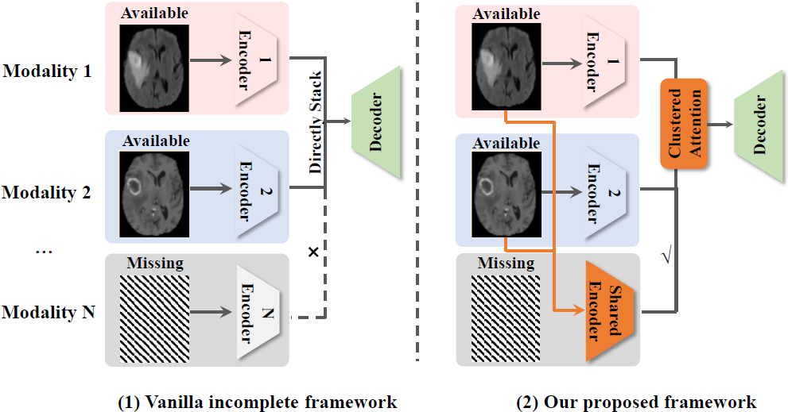
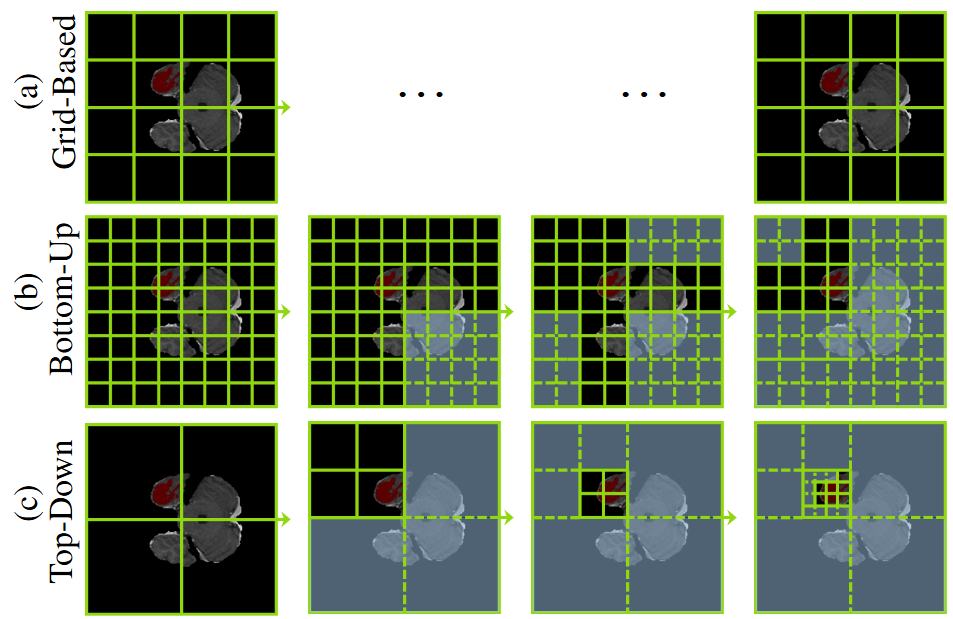
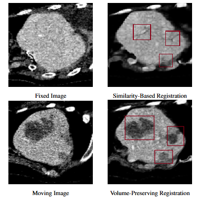
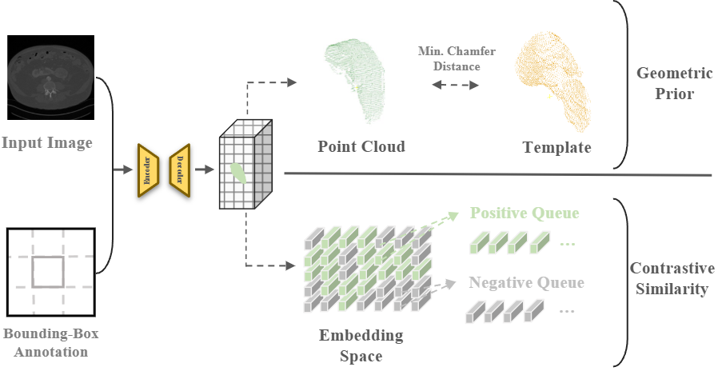
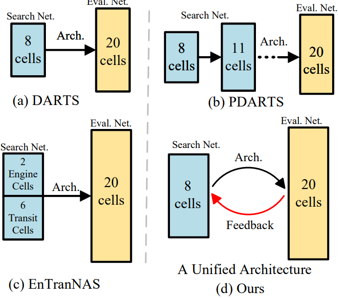
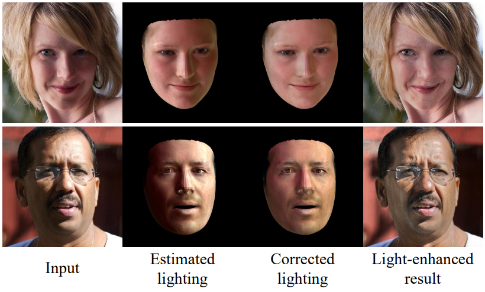
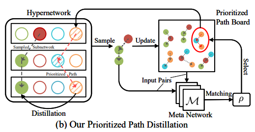

|
Hao DU
Email /
Google Scholar /
Github
I earned my B.S. in Software Engineering from the University of Electronic Science and Technology of China in 2019. Since 2020, I have been pursuing a Ph.D. under the supervision of Prof. Jing Liao, and I expect to graduate in August 2025.
❗❗❗I am actively seeking collaborations❗❗❗—either formal or informal—on projects at the intersection of medical imaging and in-network (edge/cloud) computing.
Potential topics are outlined in the sections that follow.
|
|
I seek collaborations in emerging areas including:
-
AI Framework Optimization:
- In-Network Computing for collective communication operators (*CCLs)
- KV cache
- AI for storage, or Storage for AI
-
Medical Imaging:
- 2D/3D Medical Image Analysis, e.g., Segmentation, Classification, Registration
- Medical (M-)LLMs related topics, e.g., SAM in medical imaging
-
Multimodal Large Language Models (MLLM) for biomedical domain-specific tasks:
- e.g., M-LLMs for psychological health
- or other similar tasks, applying LLMs for certain specific task
|
Research
I'm interested in optimization and efficiency, medical image segmentation and weakly-supervised image segmentation..
|
|

|
RC-Seg: One-Shot Medical Image Segmentation via Asymmetric Registration and Volume-Aware Clustering
Hao Du, Qihua Dong,
Yan Xu,
Jing Liao
under review
We propose RC-seg, a novel framework that combines asymmetric registration and volume-aware clustering to robustly segment target objects in one-shot scenarios.
|
|

|
Contrastive Feature Extraction and Shared-Unique Clustered Attention for Multimodal 3D Medical Image Analysis
Hao Du, Qihua Dong,
Yan Xu,
Jing Liao
IEEE Journal of Biomedical and Health Informatics (JBHI), 2025
we propose a medical image processing framework for incomplete modality scenarios, featuring two key components: Contrastive Feature Extraction (CFE) and Shared-Unique Clustered Attention (SUCA).
|
|

|
TDFormer: Top-Down Token Generation for 3D Medical Segmentation
Hao Du, Qihua Dong,
Yan Xu,
Jing Liao
IEEE Journal of Biomedical and Health Informatics (JBHI), 2025
We propose a top-down token generation for 3D medical image segmetnation.
|
|

|
Preserving Tumor Volumes for Unsupervised Medical Image Registration
Qihua Dong*, Hao Du*,
Yan Xu,
Jing Liao
IEEE International Conference on Computer Vision (ICCV), 2023
We propose to preserve tumor volume during the registration of 3D medical images.
|
|

|
Weakly-Supervised 3D Medical Image Segmentation using Geometric Prior and Contrastive Similarity
Hao Du, Qihua Dong,
Yan Xu,
Jing Liao
IEEE Transactions on Medical Imaging (TMI), 2023
We propose to encourage organ pixels to gather in the contrastive embedding space and learn robust geometry from a template.
|
|

|
Cyclic Differentiable Architecture Search
Hongyuan Yu,
Houwen Peng,
Yan Huang,
Jianlong Fu, Hao Du,
Liang Wang,
Haibin Ling
IEEE Transactions on Pattern Analysis and Machine Intelligence (TPAMI), 2022
We propose new joint optimization objectives and a novel Cyclic Differentiable ARchiTecture Search framework.
|
|

|
Deep Portrait Lighting Enhancement with 3D Guidance
Fangzhou Han*, Can Wang*, Hao Du, Jing Liao
Computer Graphics Forum (CGF), 2021
We presents a novel deep learning framework for face lighting enhancement based on 3D facial guidance.
|
|

|
Cream of the Crop: Distilling Prioritized Paths For One-Shot Neural Architecture Search
Houwen Peng*, Hao Du*,
Hongyuan Yu*,
Qi Li,
Jing Liao,
Jianlong Fu
Annual Conference on Neural Information Processing Systems (NeurIPS), 2020
The central idea is that subnetworks can learn collaboratively and teach each other throughout the training process, aiming to boost the convergence of individual models.
|
-
VOT Long Term Track, 3rd place, 2019
-
Outstanding Undergraduate of China Computer Federation, 2017
-
10th National College Student Information Security Competition, 1st place, 2017
-
Lan Qiao Cup, Gold Medal, 2017
-
The Challenge Cup, Gold Medal, 2017
-
CCCC GPLT, 2nd place, 2017
-
CCF CCSP, Silver Medal, 2017
-
ICPC Xian, Bronze Medal, 2017
-
CCPC Hefei, 3rd place, 2016
-
CCF CCSP, Bronze Medal, 2016
-
9th National College Student Information Security Competition, Bronze Medal, 2016
-
MSRA, Multimedia Search and Mining, 2019.01-2021.01 (including online collaboration)
- Rank 1 in OxUvA (team_id 'MSRA_MSM' with submisstion date 08/10/19)
- SiamDW series for VOT 2019 challenge (Visual Object Tracking), 3rd in Long-Term track
- NeurIPS'19, Cream of the Crop: Distilling Prioritized Paths For One-Shot Neural Architecture Search, code in this repo
-
Momenta, Platform depart., 2018.10-2019.01
- Survey model compression and acceleartion for DNN and summeraize in this repo
- Re-implement DropBlock in caffe-based DL training framework, code in this repo
-
SenseTime, Platform depart., 2018.01-2018.07
- Re-implement Deep Gradient Compression to accelerate DL training framework
- Re-implement Large scale distributed neural network training through online distillation
-
Weakly-Supervised 3D Medical Image Segmentation using Geometric Prior and Contrastive Similarity
- Jing Liao, Yan Xu, Hao Du, Qihua Dong
- US Patent 18,150,228
-
Preserving Tumor Volumes for Unsupervised Medical Image Registration
- Jing Liao, Yan Xu, Hao Du, Qihua Dong
- US Patent App. 18/366,735
-
无线信号接收装置及系统
- 杜昊, 康瑞, 吴高翔, 徐赛, 刘诗楠, 秦圣智, 杨希博, 周鑫
- CN201721090307.0
-
信号分类方法、装置及卫星信号检测设备
- 吴高翔, 徐赛, 杜昊, 秦圣智, 杨希博, 周鑫, 刘诗楠, 康瑞
- CN201710605802.9
-
卫星信号收发装置及系统
- 康瑞, 刘诗楠, 周鑫, 杜昊, 杨希博, 徐赛, 秦圣智, 吴高翔
- CN201721275895.5
-
卫星信号安全传递的方法、装置及卫星信号检测设备
- 秦圣智, 杨希博, 周鑫, 刘诗楠, 吴高翔, 杜昊, 康瑞, 徐赛
- CN201710478901.5
-
无线信号检测的方法、装置及无线信号检测设备
- 刘诗楠, 周鑫, 吴高翔, 秦圣智, 杨希博, 杜昊, 康瑞, 徐赛
- CN201710478794.6
|
{kind=link}